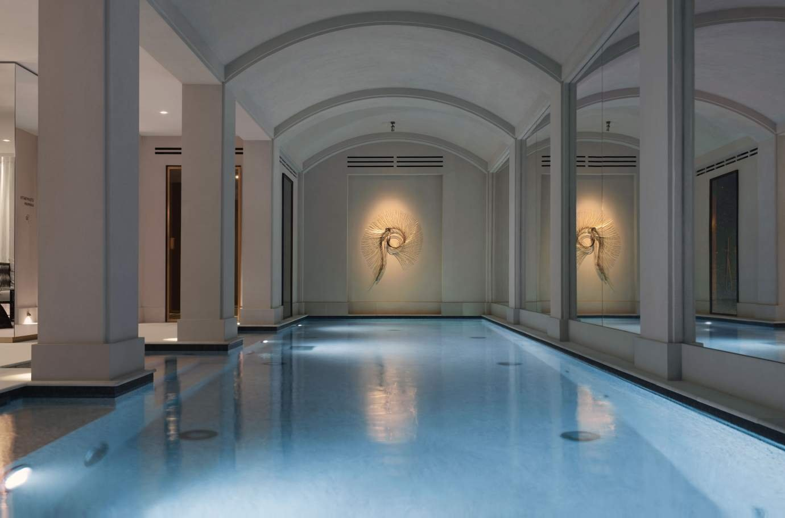
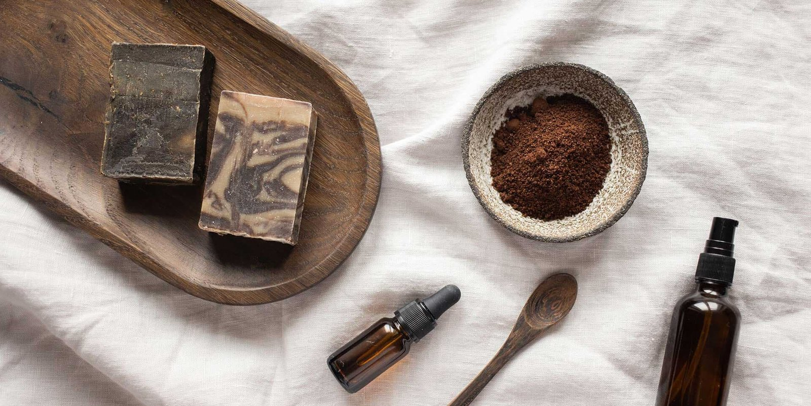
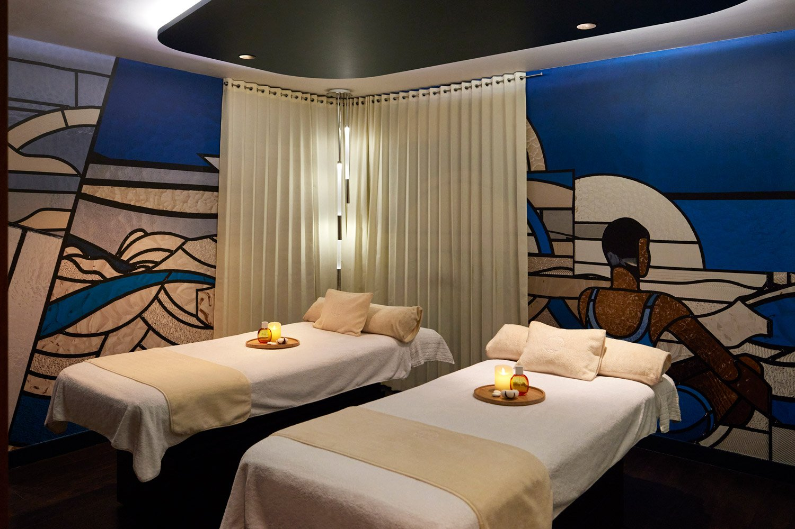

Spa de jour à Paris : huit adresses, et une seule vend l'entrée seule
On cherche une journée spa sans réserver de chambre. Sur les huit adresses que citent
toutes les listes parisiennes, cinq n'ont ni hammam, ni sauna, ni bassin : ce sont des
instituts de soins. Et une seule vous laisse entrer sans réserver un soin.
Par Swann Bertaud, rédacteur hôtellerie de luxe✺Publié le 21 août 2026✺14 min de lecture

Le bassin de quinze mètres du Spa Shiseido, sous les voûtes des Jardins du
Faubourg, rue d'Aguesseau. L'un des trois seuls parcours humides de cette page.
Photo : site officiel de l'établissement.
TL;DR : l'essentielCe que « spa de jour » veut dire à Paris, et ce qu'il ne veut pas dire
Une seule adresse sur huit vend l'accès sans soin imposé : Les Bains du
Marais, dont le hammam à la carte démarre à 40 €. Partout ailleurs, il faut
réserver une prestation pour franchir la porte.
Trois adresses seulement ont un parcours humide. Le Spa Shiseido des
Jardins du Faubourg et sa piscine intérieure de 15 mètres, le Molitor et ses
1 300 m² à deux bassins, et Les Bains du Marais. Les cinq autres sont des
instituts de soins : ni hammam, ni sauna, ni bassin.
Deux erreurs circulent partout, et nous les corrigeons. Le tarif de
29 € attribué au hammam des Bains du Marais est celui du brunch du
week-end. Et Les Bains du Marais ne sont plus dans le Marais : ils sont au
14 rue Saint-Fiacre, dans le 2e, quartier du Sentier.
Comment lire ce classement. Les huit adresses sont ordonnées par
l'Indice Accessibilité LMHS sur 5, qui mesure une seule chose : la facilité d'entrer
sans nuitée et sans soin imposé. Ce n'est pas une note de qualité. Le Molitor porte
en plus un Protocole LMHS de 15,7/20, repris de notre
palmarès national ; les deux
échelles ne se comparent pas. Aucune autre adresse ne porte de note au Protocole, faute de
visite anonyme, et nous ne prétendons pas le contraire. Relevés du 21 août 2026 sur les
sites officiels.
Le mot « spa » ne veut pas dire ce que vous croyez
La requête est claire : on veut une journée de bien-être à Paris, sans prendre de chambre.
Les listes qui répondent le sont beaucoup moins. Elles alignent huit à dix noms prestigieux,
Guerlain, Cinq Mondes, Caudalie, Biologique Recherche, et laissent croire qu'on y passe la
journée en peignoir entre un hammam et une salle de repos.
Nous avons relevé, le 21 août 2026, ce que chacune de ces maisons publie sur son propre
site. Le résultat est net : cinq des huit adresses les plus citées n'ont ni hammam, ni
sauna, ni bassin. Ce sont des instituts de soins, souvent excellents, où l'on réserve
un massage ou un soin du visage d'une heure et où l'on ressort. Ce n'est pas une critique,
c'est une définition : on n'y passe pas la journée, parce qu'il n'y a rien pour la passer.
Le second filtre est plus sévère encore. Parmi les trois adresses qui possèdent réellement
un parcours humide, une seule vend une entrée sans obligation de réserver un
soin. C'est exactement le constat que nous avions fait sur les hammams parisiens dans
notre comparatif des spas avec hammam, où deux
adresses sur huit seulement vendaient une entrée sèche. Paris a beaucoup de soins et très peu
de spas au sens où l'entend le reste de l'Europe.
Les huit adresses, et ce qu'elles vendent vraiment
Adresse
Arr.
Parcours humide
Entrée sans soin
Jours d'ouverture
Indice Accessibilité
Les Bains du Marais
2e
Hammam traditionnel
Oui, dès 40 €
7 j/7
4,8/5
Spa Shiseido, Les Jardins du Faubourg
8e
Piscine 15 m, hammam, sauna
Sur réservation
7 j/7
4,2/5
Molitor, Spa by Clarins
16e
2 bassins, hammam, sauna, fitness
Non, soin requis
7 j/7
3,9/5
Boutique-spa Caudalie, Le Marais
4e
Aucun
Non, soin requis
7 j/7
3,6/5
Spa NUXE Montorgueil
1er
Non confirmé à la source
Non, soin requis
7 j/7
3,4/5
Ambassade Biologique Recherche
8e
Aucun
Non, soin requis
6 j/7
3,0/5
Spa Cinq Mondes Opéra
9e
Aucun
Non, soin requis
6 j/7
2,8/5
L'Institut Guerlain
8e
Aucun
Non, soin requis
6 j/7
2,4/5
Installations, jours d'ouverture et conditions d'accès relevés le 21 août 2026
sur les sites officiels des établissements. L'Indice Accessibilité mesure la facilité d'entrer
sans nuitée et sans soin imposé, pas la qualité des prestations.
Les trois seules adresses où l'on passe vraiment la journée
01
Les Bains du Marais, la seule entrée sèche 4,8/5
14 rue Saint-Fiacre, 75002 Paris · Hammam traditionnel · Hammam à la carte dès 40 €
C'est la seule adresse de cette page où l'on peut décider le matin d'aller au hammam
l'après-midi. Le hammam à la carte démarre à 40 €, les forfaits complets
à 200 €, et la maison ouvre sept jours sur sept, de 10 h à 21 h du lundi
au mercredi et le dimanche, jusqu'à 22 h du jeudi au samedi. Le hammam lui-même ouvre à
11 h. La mixité change selon les jours : femmes le mercredi de 11 h à 16 h,
hommes le jeudi de 16 h à 22 h, mixte le reste du temps. Vérifiez avant
de partir, c'est le genre de détail qui gâche un après-midi.
Deux corrections utiles · Le tarif de 29 € que reprennent
la plupart des listes est celui du brunch du week-end, pas du hammam ·
Et l'établissement n'est plus dans le Marais : il a rouvert après
rénovation au 14 rue Saint-Fiacre, dans le 2e, quartier du
Sentier. Ceux qui filent rue des Blancs-Manteaux perdront une demi-heure.

Savon noir et gommage, le rituel de base des Bains du Marais. Photo : site
officiel de l'établissement.
02
Spa Shiseido, Les Jardins du Faubourg, le bassin de quinze mètres 4,2/5
9 rue d'Aguesseau, 75008 Paris · Piscine intérieure de 15 m, hammam, sauna · 10 h à 19 h, sept jours sur sept
C'est la découverte de cette enquête, et elle contredit ce que répètent les listes
parisiennes. Le spa de ce boutique-hôtel 5 étoiles du 8e possède une
piscine intérieure de quinze mètres sous voûtes, un
hammam, un sauna, des cabines solo et duo,
deux salons de repos et une tisanerie. Beaucoup d'articles affirment le
contraire et parlent d'installations limitées : c'est faux, et il suffit de regarder la
page officielle du spa pour s'en convaincre.
Ouvert de 10 h à 19 h tous les jours, ce qui est rare
dans ce quartier · Réservation via la plateforme de l'établissement · Le tarif d'accès
n'est pas publié en ligne, il faut le demander · Localisation entre la Madeleine et
l'Élysée, à quelques minutes du Faubourg Saint-Honoré
03
Molitor, Spa by Clarins, le seul vrai domaine aquatique 3,9/5
8 avenue de la Porte Molitor, 75016 Paris · Protocole LMHS 15,7/20 · 10 h à 20 h, sept jours sur sept
Sur le papier, c'est l'adresse la plus complète de Paris : 1 300 m²
consacrés au bien-être, une piscine intérieure et une piscine extérieure
dans le bassin Art déco de 1929, un hammam, un sauna, un
espace fitness, treize cabines dont deux duo et une
suite spa privative de 50 m². Le spa ouvre de 10 h à 20 h, tous les
jours.
Ce qui le fait reculer sur notre indice n'est pas la qualité, c'est la porte d'entrée.
Il n'existe pas d'accès aux installations seules : les formules destinées
aux visiteurs extérieurs associent obligatoirement un soin, facturé
310 € pour une heure et 370 € pour une heure et demie.
C'est une très belle journée, ce n'est pas une entrée de piscine.
Le Molitor est la seule adresse de cette page notée au
Protocole LMHS, à 15,7/20, note reprise à l'identique de
notre palmarès national des
50 meilleurs hôtels et spas. Une échelle sur 20 suppose une visite anonyme : les sept
autres adresses n'en portent pas.

Une cabine duo du Spa by Clarins, sous les mosaïques Art déco du Molitor.
Photo : site officiel de l'établissement.
Les cinq autres sont des instituts, et il faut le savoir avant de réserver
Les adresses qui suivent sont réputées, et plusieurs sont excellentes dans leur registre.
Aucune ne vend une journée. On y réserve un soin, on le prend, on repart. Les classer plus bas
ne dit rien de la qualité de leurs mains, seulement du fait qu'elles ne répondent pas à la
question posée par cette page.
04
Boutique-spa Caudalie, Le Marais 3,6/5
11 rue Pavée, 75004 Paris · 10 h à 19 h, sept jours sur sept
Une boutique-spa au cœur du Marais, ouverte tous les jours, qui décline les rituels de
vinothérapie de la marque bordelaise, soins du visage, gommages et massages.
Aucun espace humide : ce sont des cabines derrière une boutique. Son
atout sur cette page est l'amplitude, sept jours sur sept, et une implantation qui rend
l'après-midi facile à combiner avec le quartier.
05
Spa NUXE Montorgueil 3,4/5
32-34 rue Montorgueil, 75001 Paris · 14 cabines dont 6 doubles · Soins du visage de 79 à 190 €, massages de 119 à 165 €
Le décor est le meilleur argument de la maison : d'anciennes caves voûtées du
XVIIe siècle, pierre apparente, quatorze cabines dont six doubles, au
milieu de la rue Montorgueil. Les soins du visage vont de 79 à 190 € selon la durée, les
massages de 119 à 165 €.
Une réserve que nous devons écrire : plusieurs annuaires décrivent ici une
piscine chauffée, un bain à remous, un hammam et un sauna, sur 850 m².
La page officielle de la maison ne mentionne aucune de ces installations
et ne décrit que les cabines. Nous ne les comptons donc pas, et nous vous conseillons de
poser la question à la réservation si c'est un bassin que vous venez chercher.
32 avenue des Champs-Élysées, 75008 Paris · 11 cabines et un salon de coiffure privé · Du lundi au samedi, dès 9 h 30
La maison culte des dermatologues applique ici son protocole complet : chaque soin du
visage commence par un diagnostic au Skin Instant Lab, l'appareil de
mesure de la marque, avant toute décision. Onze cabines, un salon de coiffure privé, une
ouverture large en semaine dès 9 h 30. C'est un centre de résultat, pas de sensorialité :
aucun espace commun, et on ne s'y attarde pas.
07
Spa Cinq Mondes Opéra 2,8/5
6 square de l'Opéra-Louis Jouvet, 75009 Paris · 500 m² · Fermé le dimanche
Cinq cents mètres carrés derrière l'Opéra, une architecture aux lignes courbes, un
espace détente et des cabines. Les rituels du monde de la marque, dont le
Ko Bi Do Royal à partir de 65 € et sa version Prestige à partir de 200 €,
sont sa signature. Là encore, ni hammam, ni sauna, ni bassin. Ouvert du
lundi au mercredi de 10 h 30 à 19 h, du jeudi au samedi dès 9 h 45,
fermé le dimanche, ce qui écarte le jour où l'on cherche le plus une
journée spa.
08
L'Institut Guerlain, 68 Champs-Élysées 2,4/5
68 avenue des Champs-Élysées, 75008 Paris · Ouvert depuis 1939 · Fermé le dimanche
C'est le plus beau nom de cette page et le moins adapté à la question qu'elle pose.
L'Institut Guerlain, inauguré en 1939, propose des soins du visage et du
corps d'exception dans une suite Facialist, avec un rituel d'accueil qui commence par un
thé et un macaron dans une serre à orchidées donnant sur l'avenue. Il n'y a
ni hammam, ni sauna, ni bassin, et la maison ferme
le dimanche. On y va pour un soin signé, pas pour une journée.
Quelle adresse pour quel usage
Décider le matin pour l'après-midi. Il n'y a qu'une réponse, Les Bains du
Marais, et son hammam à la carte dès 40 €. Vérifiez la mixité du jour avant de partir.
Nager, puis suer, puis se poser. Le Spa Shiseido des Jardins du Faubourg
pour un bassin de quinze mètres en plein 8e, ouvert tous les jours jusqu'à 19 h. Le
Molitor pour l'ampleur, deux bassins et 1 300 m², à condition d'accepter la formule avec soin
et le trajet jusqu'à la Porte Molitor.
Un dimanche. Quatre adresses seulement ouvrent : Les Bains du Marais, le
Spa Shiseido, le Molitor et la boutique Caudalie du Marais. Guerlain, Cinq Mondes et
Biologique Recherche sont fermés.
Un résultat visible sur la peau. L'Ambassade Biologique Recherche et son
diagnostic instrumental, ou l'Institut Guerlain. Ni l'un ni l'autre ne vous donnera une
journée, et ce n'est pas ce qu'on leur demande.
Un hammam avant tout. Cette page n'est pas le bon comparatif : allez voir
notre classement des huit meilleurs hammams de Paris,
où les adresses sont notées au Protocole LMHS après visite, température des salles chaudes à
l'appui. Et si vous cherchez le contraire, le froid, nos
cinq adresses de bain froid à Paris sont toutes sous
100 €.
Ce que mesure notre Indice Accessibilité
L'Indice Accessibilité LMHS sur 5 répond à une seule question : à quel
point est-il simple d'entrer sans dormir sur place. Il agrège quatre éléments vérifiables sur
les sites officiels : l'existence d'une entrée sans soin imposé, qui pèse le
plus lourd, le nombre de jours d'ouverture par semaine,
l'amplitude horaire, et la présence d'un parcours humide qui
justifie qu'on reste plus d'une heure.
Il ne mesure pas la qualité des soins, ni le geste des praticiens, ni le
confort du lieu. Une adresse peut être remarquable et mal classée ici : c'est exactement le
cas de l'Institut Guerlain. Pour la qualité, il faut une visite, et une visite donne droit à
une autre échelle, le Protocole LMHS sur 20, que porte sur cette page le seul
Molitor. Le même principe gouverne notre
sélection romantique normande,
classée par l'Indice Romantisme et non par le score global.
Le mot de SwannParis vend des soins, pas des journées
Il y a un malentendu durable entre ce que les Parisiens appellent un spa et ce que le mot désigne partout ailleurs. À Budapest, à Baden-Baden ou à Istanbul, un spa est un lieu où l'on entre, où l'on reste, où l'on ressort quatre heures plus tard sans avoir parlé à personne. À Paris, c'est presque toujours une cabine où l'on a rendez-vous à 14 h 30 pour cinquante minutes. Les deux sont légitimes, mais ils ne se remplacent pas, et les listes qui les mélangent envoient les gens réserver une heure de soin du visage en croyant acheter une journée. Le foncier explique tout : creuser un bassin dans le 8e coûte ce que coûte le 8e, et les maisons qui l'ont fait, Molitor, les Jardins du Faubourg, le Bristol, sont l'exception. Une réserve d'usage, que je préfère écrire : nous n'avons pas visité ces huit adresses pour cette page. Ce qui est publié ici, ce sont des installations, des horaires et des conditions d'accès, tous relevés à la source et tous vérifiables. Le geste, lui, ne se juge pas depuis un bureau, et nous ne le jugeons pas.
Swann Bertaud, rédacteur hôtellerie de luxe
FAQ : spa de jour à Paris
Qu'est-ce qu'un spa de jour, et Paris en compte-t-il beaucoup ?
Un spa de jour est un établissement où l'on accède aux installations sans réserver de chambre, pour quelques heures. À Paris, la catégorie est beaucoup plus étroite qu'il n'y paraît : sur les huit adresses les plus citées, trois seulement possèdent un parcours humide (hammam, sauna ou bassin), et une seule vend une entrée sans obligation de réserver un soin, Les Bains du Marais. Les cinq autres sont des instituts de soins, où l'on prend un massage ou un soin du visage avant de repartir.
Peut-on entrer dans un spa parisien sans réserver de soin ?
Rarement. Sur cette page, une seule adresse le permet : Les Bains du Marais, 14 rue Saint-Fiacre dans le 2e, dont le hammam à la carte démarre à 40 €. Partout ailleurs, y compris au Molitor et dans les spas d'hôtel, l'accès aux installations est conditionné à la réservation d'une prestation. Nous avions fait le même constat sur les hammams parisiens, où deux adresses sur huit seulement vendaient une entrée sèche.
Quels spas de jour parisiens ont une piscine ?
Deux, parmi les adresses de cette page. Le Spa Shiseido des Jardins du Faubourg, 9 rue d'Aguesseau dans le 8e, avec une piscine intérieure de quinze mètres sous voûtes, un hammam et un sauna, ouverte de 10 h à 19 h sept jours sur sept. Et le Molitor, 8 avenue de la Porte Molitor dans le 16e, avec deux bassins, intérieur et extérieur, sur 1 300 m² de spa. Contrairement à ce qu'on lit souvent, le spa des Jardins du Faubourg n'a pas des installations limitées.
Les Bains du Marais sont-ils dans le Marais ?
Non, et c'est le piège de cette page. L'établissement a rouvert après rénovation au 14 rue Saint-Fiacre, dans le 2e arrondissement, quartier du Sentier. Le nom est resté, l'adresse a changé. Autre correction utile : le tarif de 29 € que reprennent la plupart des listes est celui du brunch du week-end, pas du hammam, qui démarre à 40 €.
Quels spas parisiens sont ouverts le dimanche ?
Sur les huit adresses de cette page, quatre ouvrent le dimanche : Les Bains du Marais, de 10 h à 21 h, le Spa Shiseido des Jardins du Faubourg, de 10 h à 19 h, le Molitor, de 10 h à 20 h, et la boutique-spa Caudalie du Marais, de 10 h à 19 h. L'Institut Guerlain, le Spa Cinq Mondes Opéra et l'Ambassade Biologique Recherche sont fermés le dimanche.
Comment est calculé l'Indice Accessibilité de ce classement ?
Il agrège quatre éléments relevés sur les sites officiels : l'existence d'une entrée sans soin imposé, qui pèse le plus lourd, le nombre de jours d'ouverture, l'amplitude horaire et la présence d'un parcours humide. Il ne mesure pas la qualité des soins : une adresse excellente peut être classée bas si l'on n'y entre pas sans rendez-vous. La qualité relève du Protocole LMHS sur 20, qui suppose une visite anonyme, et que porte ici le seul Molitor, à 15,7/20.
Méthode et sources
Enquête documentaire, sans visite de contrôle pour cette page, et nous ne prétendons pas le contraire. Les huit adresses sont classées par l'Indice Accessibilité LMHS sur 5, déjà employé dans notre classement des spas à bain froid de Paris, qui mesure la facilité d'accès sans nuitée et sans soin imposé, et non la qualité des prestations. Une seule adresse porte une note au Protocole LMHS sur 20, le Molitor à 15,7/20, reprise à l'identique de notre palmarès national des 50 meilleurs hôtels et spas de France, afin qu'une même adresse ne porte jamais deux notes différentes sur ce site. Les sept autres n'en portent aucune : le Protocole suppose une visite anonyme, elle n'a pas eu lieu, et une échelle sur 20 ne s'attribue pas sur pièces. Installations, surfaces, horaires, jours de mixité, conditions d'accès et tarifs relevés le 21 août 2026 sur les sites officiels des huit établissements, page par page. Deux informations très répandues ont été corrigées à la source : le tarif de 29 € attribué au hammam des Bains du Marais est celui du brunch du week-end, l'accès hammam démarrant à 40 € ; et l'établissement se trouve au 14 rue Saint-Fiacre dans le 2e, et non dans le Marais. Une divergence est signalée sans être tranchée : plusieurs annuaires attribuent au Spa NUXE Montorgueil une piscine, un bain à remous, un hammam et un sauna que sa page officielle ne mentionne pas. Nous ne les comptons pas. Aucune note de plateforme d'avis n'est reprise : nous ne collectons pas d'avis clients. Aucun partenariat commercial, aucune affiliation. Photographies : sites officiels des établissements.
8 adresses relevéesIndice Accessibilité /51 seule entrée sèche0 partenariat